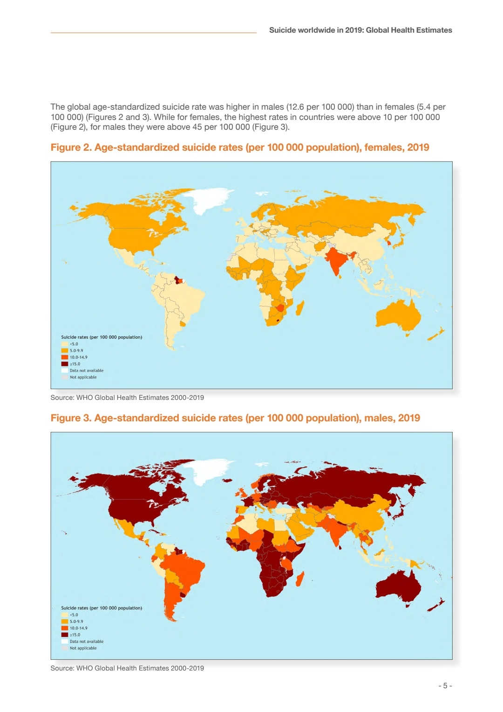

彭博分析下国内耽美剧流行什么原因？ //@Dr彭双发:韩影“负能量现实主义”拜固若金汤的财阀及男权所赐。正如韩国医美，也是金钱与男权结出的带血的恶之花，有浓郁的泡菜僵尸味道。或许社会主义先行示范国可以避免南韩特色资本主义
//@Dr彭双发:韩影“负能量现实主义”拜固若金汤的财阀及男权所赐。正如韩国医美，也是金钱与男权结出的带血的恶之花，有浓郁的泡菜僵尸味道。或许社会主义先行示范国可以避免南韩特色资本主义
@科学未来人:
哪里有压迫，哪里自杀率就高。韩国，全球少有女性自杀率高到两位数的国家。＜5/10万人算少的（中国2019年数据为女性4.8，男性8.6），而韩国女性自杀率达13.4/10万，是中国女性的3倍，是世界女性平均水平的2.5倍（13.4vs5.4）。#科学人医疗社会史#
- 